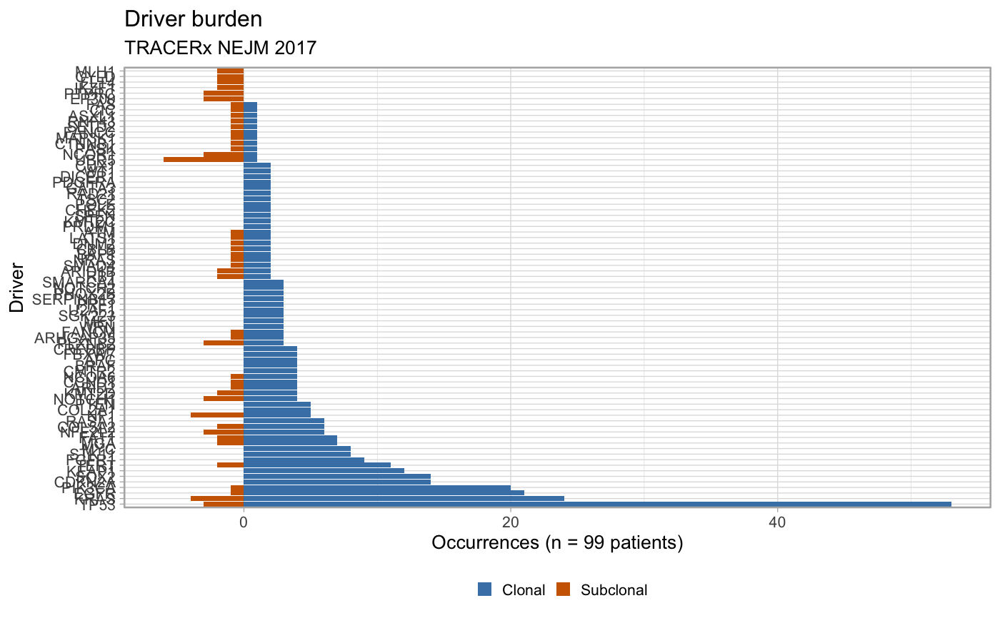

plot_drivers_clonality.RdDriver events can be annotated in clonal or subclonal clusters. This function reports this information in a barplot.
plot_drivers_clonality(x)
| x | A |
|---|
A ggplot object of the plot.
Other Plotting functions: plot_CCF_histogram,
plot_DET_index,
plot_drivers_occurrence,
plot_graph_drivers,
plot_patient_data,
plot_patient_mutation_burden,
plot_patient_oncoprint
# Data released in the 'evoverse.datasets' data('TRACERx_NEJM_2017_REVOLVER', package = 'evoverse.datasets') plot_drivers_clonality(TRACERx_NEJM_2017_REVOLVER)